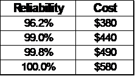
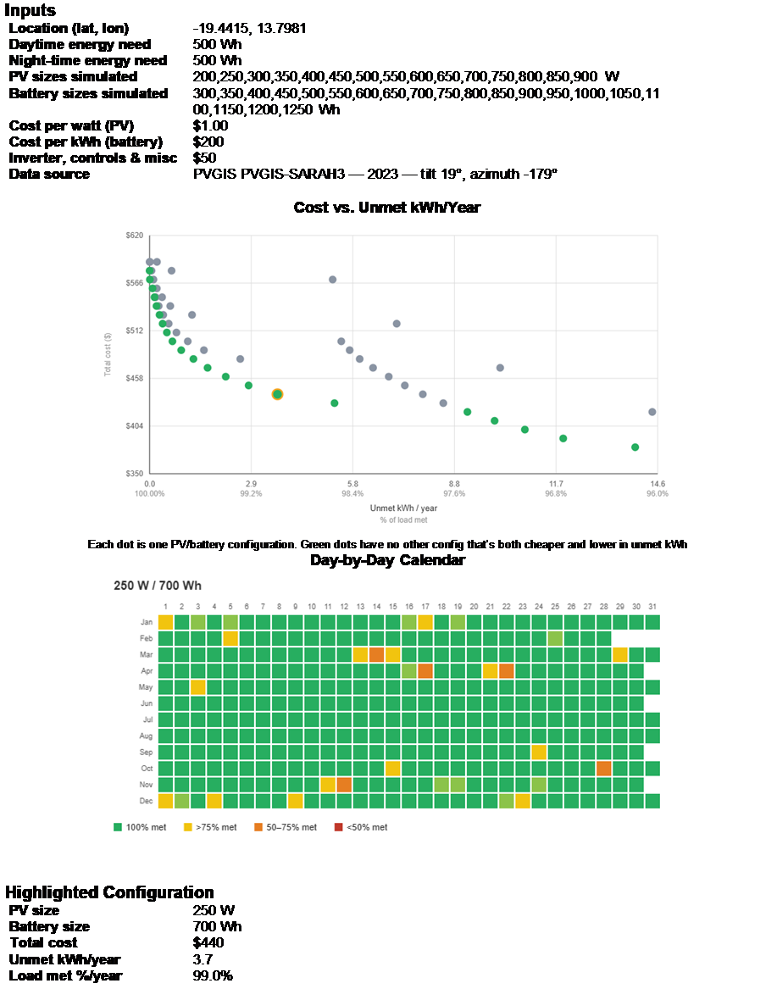

Insights From Modeling Solar + Battery Systems for Off-grid Energy Access, Including Cooking
Over the last 30 years solar PV has made accelerating progress providing energy access in developing countries. The initial focus was household lighting, but it became clear that productive uses and rural industries like tea plantations were even more promising. Despite that progress, there are about 2 billion people still cooking using smoky biomass with substantial impacts on health, safety, and the environment. Cooking is by far the biggest energy challenge for people in Africa and other developing countries. It requires at least ten times the energy of all their other household energy needs combined. Until recently, solar PV and batteries were too expensive to reasonably meet that demand. That has now changed. Designing PV + battery systems to provide most of a household’s cooking needs can provide all the other energy needs with 100% reliability without the need for a grid connection or backup source. Not only can PV + battery systems be designed to meet cooking needs, but these larger systems improve the supply chain and financial viability of the small solar businesses that are crucial for expanded energy access.
The focus of this paper and the accompanying app is the approximately 700 million people who do not currently have any access to electricity. We show that solar + battery systems that meet all household’s energy needs, including cooking, can be deployed for as little as $500 (try it in the app). That cost compares favorably against the cost of a grid connection or a couple years supply of charcoal.
Several other useful insights are derived from the modeling we performed with the app. These include:
- The impact of climate
- The impact of latitude
- The trade-off between reliability and cost
- The value of simple forms of load management
Methodology
The app is designed to quickly model a large range of both PV and battery sizes to evaluate the trade-off between cost and reliability. It uses Plane of Array solar data from PVGIS with user inputs for the $/watt for the PV and $/kWh for the battery. Those both scale linearly with the size of their respective components. A separate fixed cost is included for the inverter, controls, and miscellaneous costs. The user also specifies a range in capacities for the PV and battery components along with an interval for the app to use to model all the intermediate sizes.
We assumed a target daytime load of 500 watt-hours and a similar target nighttime load of 500 watt-hours. This should be sufficient for most households, especially using electric pressure cookers (EPCs). We also measured an energy consumption of 120 watt-hours for an EPC cooking 4 portions of rice. See a full list of assumptions in Appendix A.
Results
The first output is a scatter plot of all the modeled systems as a function of their reliability and cost as shown in Figure 1. The systems along the Pareto frontier are shown in green. These are systems for which there are no other systems that are both less expensive and more reliable. The steeply increasing slope of this graph shows quite clearly the extra costs associated with eliminating the last small amounts of unmet energy. This can also be seen in the following table for 4 of the systems.


Figure 1 — Results for Namibia with a 1 kWh/day load.
The data behind this graph is then presented in several tables, a subset of which is shown in Appendix B. A report that can be opened in Word and hourly data that can be opened in Excel and a histogram of unmet load per day can be downloaded for each modeled system.
As can be seen in Figure 1, there is a wide range of costs depending on the tolerance for small percentages of unmet energy. In this example, some systems cost as little as $380, if the user can be flexible about their cooking load. What can also be seen from this graph is how much steeper the curve gets as you get close to 100% reliability. The actual choice among the options depends on user preferences. The highlighted point has a cost of $440 and reliability of 98.6%.
In contrast to these very low-cost systems, the cost of a system with zero unmet energy is $580. Compared to a system that supplies 99.8% reliability, that is an extra $90 (32% increase) just to supply the last 0.9 kWh/year of energy.
Although not shown, we also analyzed rainier locations and mid-latitude locations. An obvious result is that rainy locations require larger and more expensive systems. Load management for these systems consist simply of cooking less energy-intensive meals on very cloudy days or potentially reverting to other cooking methods on the occasional days with the worst solar resource. On the other hand, load management is probably easier in a rainy location because firewood or other forms of biomass would be more readily available.
Mid-latitude locations require more load management and have a higher cost premium without the load management. This is because of the reduced solar radiation in the winter, which is not a problem in tropical locations. A simple solution to this problem is the use of a backup generator, which would be practical for mini-grid applications and larger commercial or industrial applications, but is not practical for individual households and systems of these sizes.
Conclusion
This analysis shows quite clearly that individual solar home systems with batteries can provide all energy needs for most households, most importantly including their cooking loads. These systems can be provided at a cost that compares favorably to the cost of grid connections or charcoal purchases. The analysis also shows how beneficial small amounts of load management can be in reducing the cost of these systems. We encourage the reader to run their own analyses with this simple app for other unelectrified locations and cooking needs.
Appendix A — Assumptions
- There is no backup generator. We assume that traditional cooking methods are still available when needed.
- This is intended for individual stand-alone systems and not for mini-grids. This assumes that the user can handle any load management themselves without the cost of meters, poles and wires and administrative costs.
- PV panels face the equator and are tilted at an angle equal to latitude.
- Output is derated by a temperature correction and a further 14% to account for various typical losses, per PVGIS.
- The battery is controlled to have a minimum state of charge of 10%, and a round trip efficiency of 95%.
- The demand is spread evenly within a daytime demand period and a separate nighttime demand period.
- Although we track how often the battery reaches its maximum state of charge, we don’t track the amount of excess energy available above the target load.
- We have a user-defined cost input for the inverter and other electronic controls, but don’t distinguish between AC and DC applications.
- We model the energy content of the battery in Wh’s but not its potential discharge rate in watts.
- We don’t model other energy loads a household may have and assume that any lighting and small electronic loads are small enough that a system that can provide even only a portion of the cooking load can handle the much smaller loads with 100% reliability.
- We do not currently have a front end with lists of electrical cooking appliances and energy requirements for typical meals.
Appendix B
The full app report for the highlighted configuration in Figure 1: inputs, the cost-vs-reliability scatter plot, the day-by-day calendar, and the highlighted 250 W / 700 Wh system ($440, 99.0% of load met).
